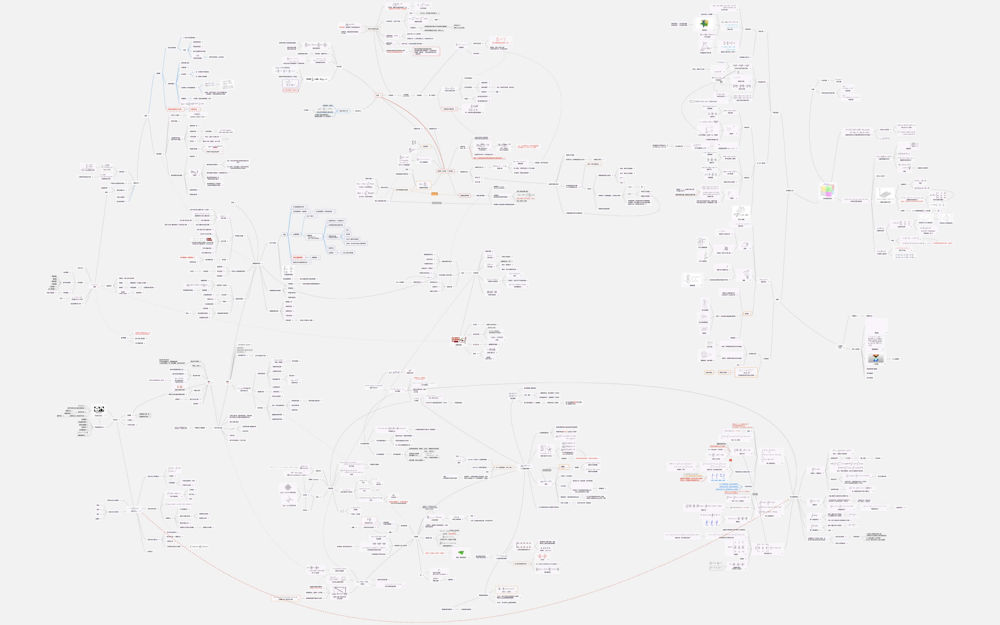
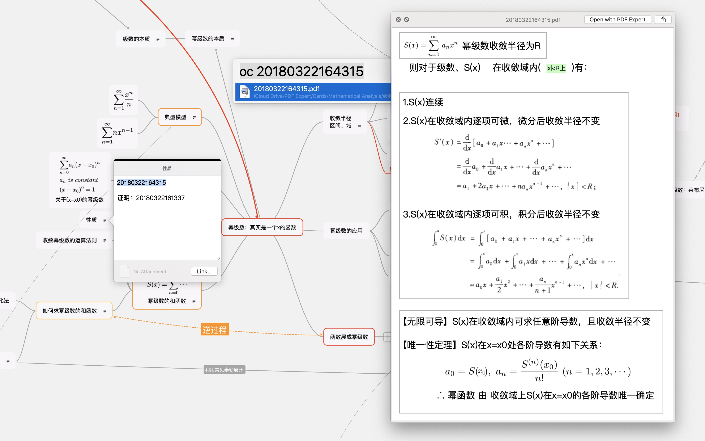

从接触电子化知识管理体系开始，我陆续尝试过 OmniOutline+OmniGraffle 、 Evernote 、 OneNote 、 Youdao Note 、 Scrivener 、 MarginNote 、 Old M&C System(MindNode+PDF Expert+Markdown) 、 Notability 、 Notion 等解决方案，但是总有一些不尽人意，而现在逐渐喜欢上了个人 Wiki 这样的解决方案。
在使用以上的各种方式时遇到了很多问题(需求)：
- 我需要一个能够稳定存储、同步方便、最好是跨平台编辑和查看的工具。
- 很多优秀的软件，虽然真的很牛，但是只在一两个平台上被支持， MarginNote 和 Scrivener 只支持苹果家，Old M&C System 脱离了macOS 也会很不好使用(感觉 macOS 上对 PDF 和 MindMap 的编辑是最丝滑的)。
- 一个很理想的解决方案是 OneNote ， 但是这款软件更适合作为课堂笔记本，最好买一个 iPad 或者 Surface 配合手写笔使用，能涂能画能打字能拍照能插文件，做前期的笔记收集，或者后期的媒体资料仓库。但是OneNote没有标签系统，分层也有限制，但最大的硬伤还是同步问题，不挂梯子只能等到天荒地老...
- Scrivener 是一款用于长期写作收集的软件，不是一款知识管理软件，而且只有苹果家。
- DEVONthink 听说很强但不大会用，而且只有苹果家。
- 这个工具对知识的整理方式应当是多元的、可以相互联系的，可以运用链接、标签、搜索等快速相互关联和搜索，而不会在寻找上浪费时间。
- OmniOutliner 组织方式太单一，有时候知识之间的关联真的不止“主干-分支”那么简单，这是多少层级都无法解决的问题。
- 有道云笔记还是当成仓库和收件箱比较好，不吹不黑。
- Notability 最好还是当成一个课堂笔记的工具，还是要转移给别的软件做整理的。
- 这个软件还需要能存储足够多的东西，形式不必太过丰富但至少能满足需求、具有一定的拓展性，可以定制、而且易于编辑和重新修改。
- OmniOutline 是富文本格式，支持的知识形式不大丰富而且修改起来还是很繁琐的。当年写 LaTeX 公式，写错了只好重新打，后来只好把公式代码贴在备注上。更不要说什么思维导图、流程图、代码高亮一类的了，都是手动上色或者利用 OmniGraffle 续命的。其他几款类似于富文本的应用也同理。
- 当年甚至还想过用 TeX 来记笔记，后来想想还是不要折磨自己了。同样 Markdown 也有很多不丰富不方便的地方，比如图片存哪的问题——存网上考虑离线使用不方便、存本地乱的一批、转成 base64 文件乱的一批。
- 光用思维导图，根本没法做知识仓库，我认为思维导图还是不要去添加太多的文字内容，每一个节点就是一个关键词，这样才能发挥伯赞先生“联系、梳理”的初衷。但是这样，具体知识就只能放在每一个节点的备注里，而备注又是富文本格式，同上。
- 方便、方便、方便 | 稳定、稳定、稳定
在 Wiki 之前我做使用的方案是用 PDF 把每一个知识点做成知识卡片(强烈推荐 PDF Expert )，然后利用 macOS 的
Automator创建一些工作流并在Alfred里增加快捷入口，能够一键以给定的时间戳格式新建知识卡片并存在 iCloud 指定的路径下(另外后来又新增加了 Markdown 格式的知识卡片)。然后复制这个时间戳到思维导图的对应知识点的备注里，然后用思维导图把每一个知识点关联起来做成一张网图(MindNode 允许一张图里有多个思维树根目录，所以可以被用作一个操作丝滑的节点拓扑联系图软件而不一定非是传统的思维导图)。
这样的话，我看笔记会直接打开这张图看节点，哪个节点不明白就直接去复制时间戳利用
Alfred快速打开对应的 PDF 知识卡片。这个思维导图+卡片的思路用起来还是很舒服的，基本上实现了我对知识管理的要求：多元、联系、直观。下面是一个我用这个方法做的微积分笔记的 Map :

通过工作流就可以快速定位卡片：

- 这虽然已经是一个很好很酷的方案了，但是还是有我不满意的地方——如果满意我就不会在寻找了。
- 这个方案能很好地解决“节点”的组织问题，而且它足够直观，而且理论上可以连接各种形式的文件(因为连接本身只是一个时间戳，我只需要修改工作流就好)所以足够丰富，而且这个方案利用 MindNode 画的图让我非常满意，
拿出去也很有逼格，完成这样一个“艺术品”让我感觉的确对知识的整理和消化又提升了一个境界。 - 但是，我没有办法很好的做到“方便”，从思维导图的一个节点到复制时间戳到打开工作流到预览总共需要四步，PDF的没有排版不支持丰富的媒体，修改用 LaTeX 写的公式依旧需要重新再写一遍，而 Markdown 也是同理。完成这样一份笔记还是会消耗很多额外的时间，有时候会显得不值。而在手机上，打开一张知识卡片的成本就更大了。
- 我也没有做到“联系”，思维导图只能让我连一层，我没法给知识卡片贴上标签(局部的，不希望用 macOS 的标签，那样会破坏移植性和便携性)，也没办法做到像维基百科那样一个词能调到对应的词条去，顶多里面再放一下另一个卡片的时间戳，然后再做“那四步”。
- 这样的体系实际上是臃肿的，实际使用过程中，像上面微积分这样的大型知识图已经变得卡顿，而且有时还会出现无法正常保存的bug。同时，由于数学公式和图表等只能转化成图片，所以体积又进一步增大。而大量的知识卡片也难于管理，同时其实 PDF 做出来的知识卡片，如果不加精修是很不美观的，但是我没有那个时间。
- 这个方案能很好地解决“节点”的组织问题，而且它足够直观，而且理论上可以连接各种形式的文件(因为连接本身只是一个时间戳，我只需要修改工作流就好)所以足够丰富，而且这个方案利用 MindNode 画的图让我非常满意，
基于以上这些原因，虽然这一套系统很让我满意，但是我要是觉得需要一个更好的方案，然后我找到了个人Wiki系统，满足了我的这些需求。
比较与结果
在网上比较了众多的 Wiki 实现方式，最终纠结于以下三个：
- TiddlyWiki
- DokuWiki
- MediaWiki
三者的功能都很强大，面向分别为个人-小团体-大群体，功能都很丰富，但是从部署难度和复杂度来讲逐渐增高，但越后者具有越好的协作编辑能力。
其实说实话，如果 TiddlyWiki 不是单文件系统而是分页式的包、可以加载数据库；同时支持历史版本管理和多人协作，我就不必这么纠结了。毕竟 TiddlyWiki 有非常好的便携性、跨平台型和扩展性。但是这暂时是不可以兼得的，或许以后可以参与 TiddlyWiki 的开发。 TIddlyWiki5 在 GitHub 上的仓库
在 https://www.wikimatrix.org/ 可以比较多种 Wiki 系统，找到合适自己的方案。
经过对比和思想斗争之后，我决定暂时割舍 DokuWiki 和 MediaWiki ，先用 TiddlyWiki 构建个人的够我一个人用，以后等到成熟了、需要多人开发的时候去买服务器搭建 DokuWiki / MediaWiki 。